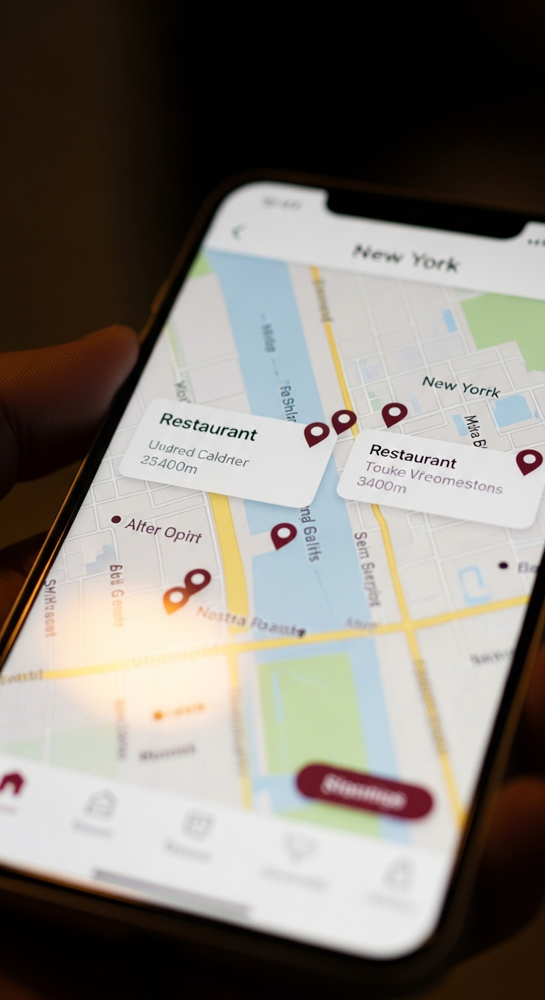

CS Final Project Proposal
Your personal guide to the city — discover, connect, and explore NYC like never before.
Motivation. New York City offers an overwhelming abundance of places to eat, drink, work out, and explore — yet most discovery tools either surface generic reviews or rely on opaque algorithmic feeds that ignore personal taste and social context. The result is decision fatigue: people default to the same three spots they already know. TAILR addresses this gap by combining curated, locally sourced venue data with a social graph, so that every recommendation reflects not just popularity but the preferences of people you actually trust.
User & business value. For urban residents and visitors alike, TAILR acts as a knowledgeable local friend who knows the city's hidden gems. Users benefit from serendipitous discovery — finding the perfect coffee shop for a solo work session, or a rooftop bar their crowd has bookmarked — without hours of research. For local businesses, TAILR provides organic, community-driven visibility that rewards quality over ad spend. The platform's gamification layer (points, streaks, unlockable badges) drives retention and turns passive consumers into active contributors of local knowledge.
Components we will build. TAILR is a full-stack mobile-first web application. On the frontend we will build an interactive Leaflet map with custom venue pins, a Tinder-style swipe discovery interface, a social feed for check-ins and posts, user profiles with follow graphs, curated lists, and an AI-powered conversational assistant (TailrBot) for natural-language venue search. The backend exposes a RESTful API built with Express and TypeScript, backed by a PostgreSQL database managed through Drizzle ORM. Key systems include session-based authentication, a daily swipe quota engine, a notification service, a points and gamification ledger, and a Google Places integration for real-time venue photos and metadata.
| First Name | Last Name | SIS ID | |
|---|---|---|---|
| Furui | Guan | furui.guan@yale.edu | fg436 |
| Annabella | Yuan | annabella.yuan@yale.edu | jy782 |
| David | Schmidt | david.schmidt@yale.edu | dps69 |
| Yichen | Li | max.li.yl2847@yale.edu | yl2847 |
| Marco | Mendola | marco.mendola@yale.edu | mm4729 |
| Camille | Chretien | camille.chretien@yale.edu | cjc284 |
A 30-second vertical hype reel concept for TikTok / Reels — three scenes, one story.
| Image | Scene Description | Narration |
|---|---|---|
| Scene 01 · 0–8s | Lost in the City A young person stands frozen at a busy NYC intersection, phone in hand, surrounded by a wall of neon signs and restaurants. The camera slowly zooms in on their overwhelmed expression as notification after notification floods their screen — conflicting Yelp reviews, algorithmic feeds, ads. The chaos is palpable. |
"New York has 27,000 restaurants. Infinite bars. Hundreds of gyms. And somehow… you always end up at the same three places. Sound familiar?" |
|
 Scene 02 · 8–20s |
Meet TAILR A phone screen slides into frame showing the TAILR interface — an elegant cream-toned map dotted with burgundy pins. The user swipes through venues Tinder-style: a speakeasy in the West Village, a ramen spot in Nolita, a rooftop gym in Williamsburg. Each card feels personal, not algorithmic. The TailrBot AI chat bubble appears, the user types "cozy wine bar, not touristy" and a perfect recommendation materializes instantly. |
"TAILR is your personal city guide — curated by locals, powered by your crew. Swipe to discover. Ask the AI. Find your spot." |
| Scene 03 · 20–30s | The Moment Cut to the same person, now laughing at a stunning rooftop bar with their friends — the exact spot TAILR recommended. Golden hour. Skyline in the background. One friend opens their phone to check them in and share to the feed. A cascade of likes and "adding this to my list!" comments fills the screen. The TAILR logo fades in over the skyline. |
"Stop scrolling. Start exploring. TAILR — your city, your people, your map." |